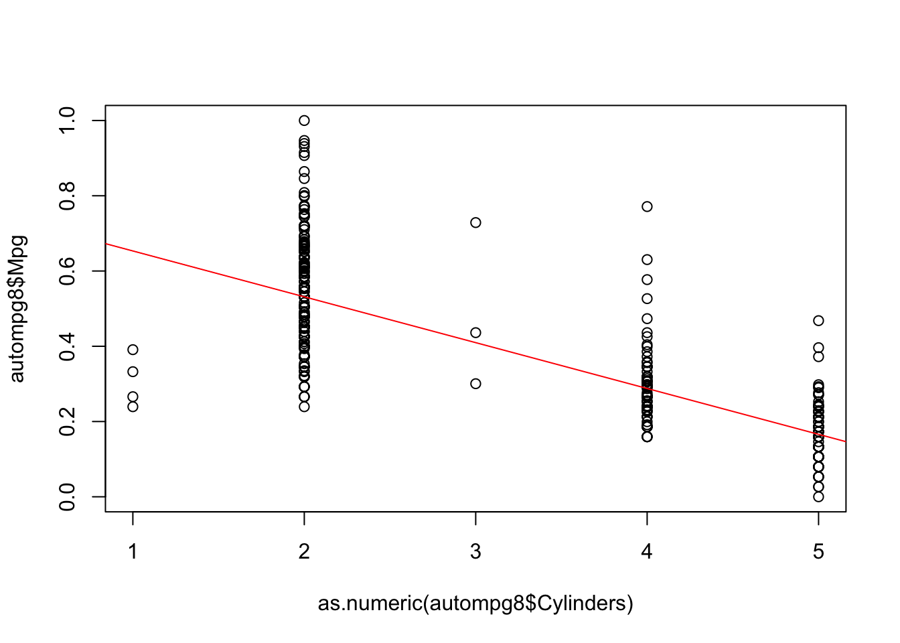
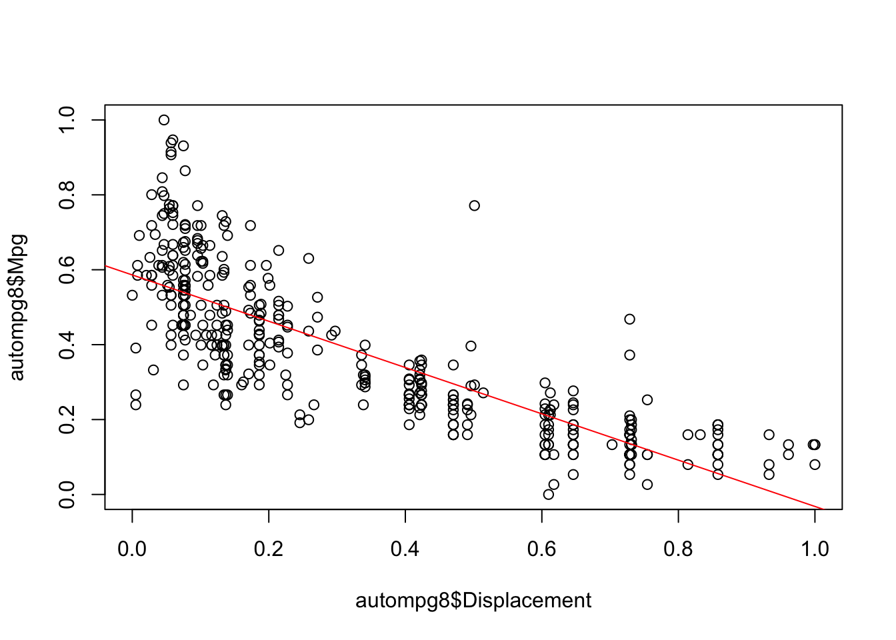
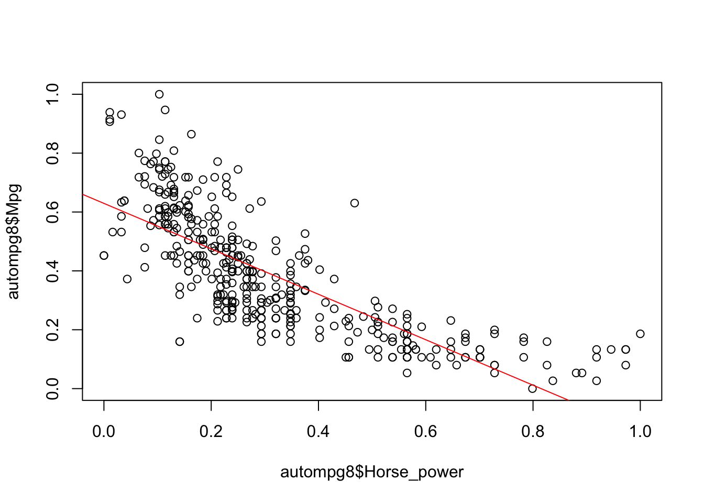
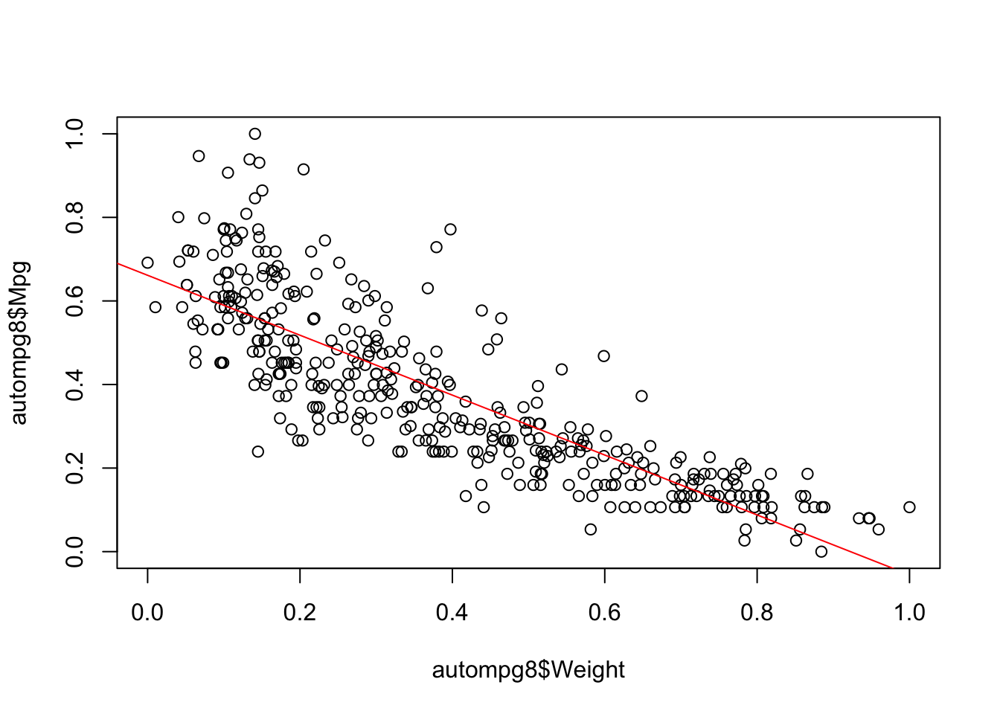
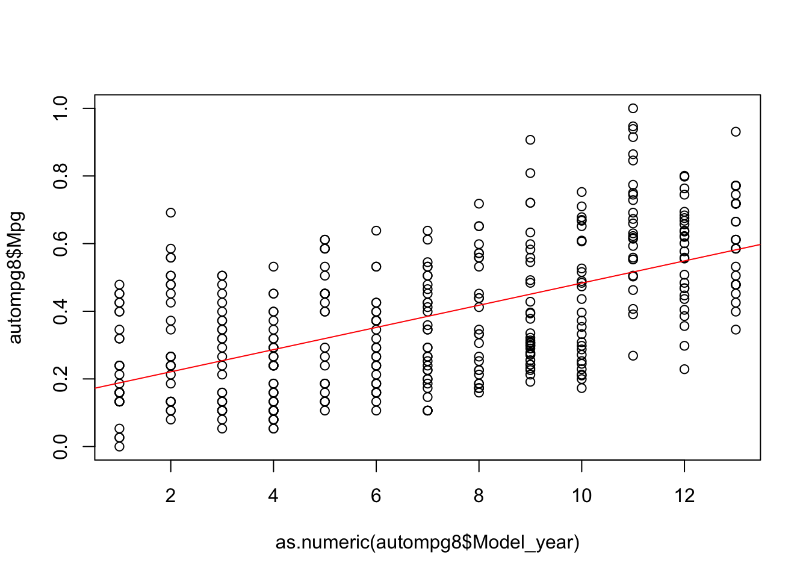
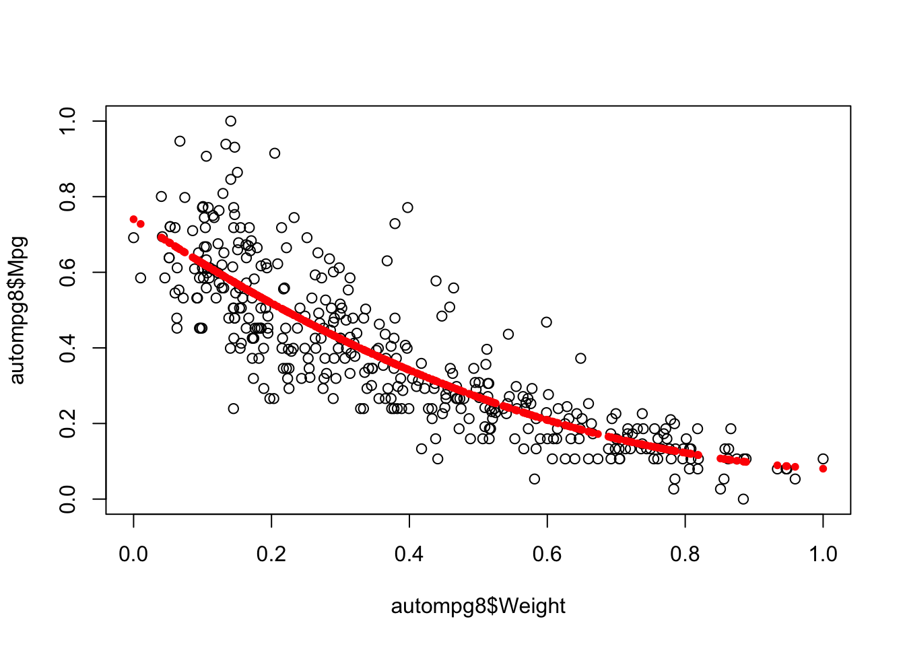
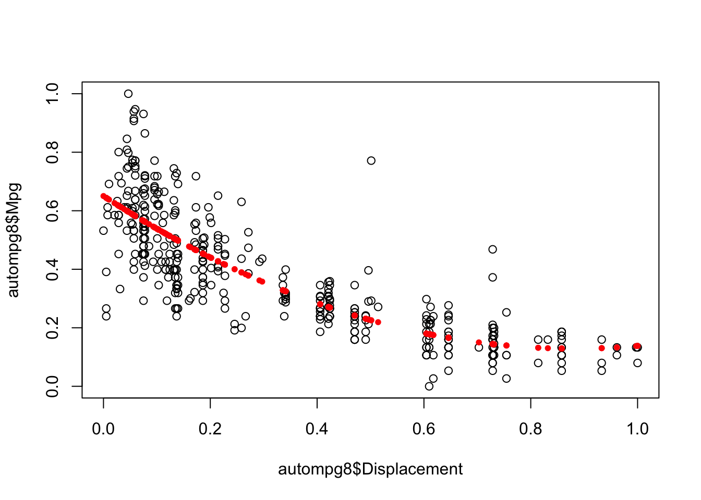
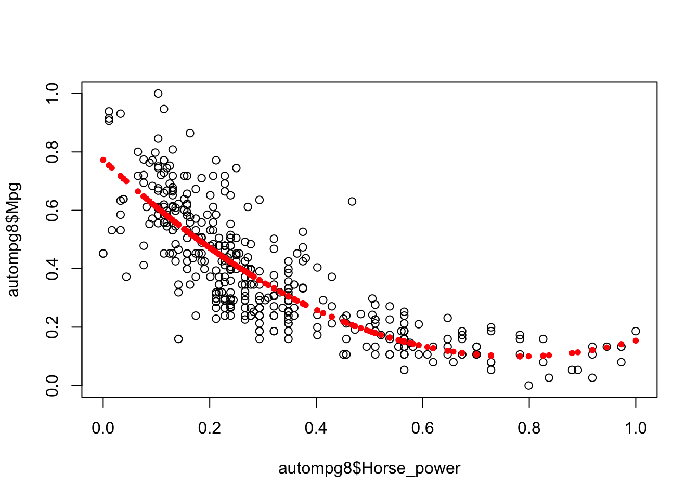

En este punto del trabajo final de la asignatura aplicaremos técnicas de regresión sobre los datos analizados en el punto 4, sobre el dataset autompg8. Concretamente se pide:
Utilizar el algoritmo de regresión lineal simple sobre cada regresor (variable de entrada) para obtener los modelos correspondientes. Si el datasetR asignado incluye más de 5 regresores, seleccione de manera justificada los 5 que considere más relevantes. Una vez obtenidos los modelos, elegir el que considere más adecuado para su conjunto de datos según las medidas de calidad conocidas.
Utilizar el algoritmo para regresión lineal múltiple. Justificar adecuadamente si el modelo obtenido aporta mejoras respecto al modelo elegido en el paso anterior (en este apartado tenga también en cuenta la consideración de posibles interacciones y no linealidad).
Aplicar el algoritmo k-NN para regresión.
Comparar los resultados de los dos algoritmos de regresión múltiple entre sí, y adicionalmente mediante comparativas múltiples con un tercero (el modelo de regresión M5’, cuyos resultados ya están incluidos en las tablas de resultados disponibles).
Vamos a construir modelos lineales simples para nuestro dataset. Para ello, nos vasaremos en las cinco variables más correlacionadas negativa o positivamente nuestra variable objetivo. Estas son:
Crearemos los modelos e interpretaremos sus resultados.
fit1=lm(autompg8$Mpg~as.numeric(autompg8$Cylinders))
summary(fit1)##
## Call:
## lm(formula = autompg8$Mpg ~ as.numeric(autompg8$Cylinders))
##
## Residuals:
## Min 1Q Median 3Q Max
## -0.41419 -0.07953 -0.02191 0.06076 0.48341
##
## Coefficients:
## Estimate Std. Error t value Pr(>|t|)
## (Intercept) 0.775447 0.017171 45.16 <2e-16 ***
## as.numeric(autompg8$Cylinders) -0.121894 0.004939 -24.68 <2e-16 ***
## ---
## Signif. codes: 0 '***' 0.001 '**' 0.01 '*' 0.05 '.' 0.1 ' ' 1
##
## Residual standard error: 0.1299 on 389 degrees of freedom
## Multiple R-squared: 0.6103, Adjusted R-squared: 0.6093
## F-statistic: 609.1 on 1 and 389 DF, p-value: < 2.2e-16plot(autompg8$Mpg~as.numeric(autompg8$Cylinders))
abline(fit1,col="red") 
Vemos que nuestro modelo no ajusta del todo bien, pero ya se obtienen valores de error aceptables que sin lugar a dudas al ser combinados en modelos más complejos ofrecerán buenos resultados.
Seguiremos probando ahora con las demás variables correlacionadas con la variable dependiente.
fit2=lm(autompg8$Mpg~autompg8$Displacement)
summary(fit2)##
## Call:
## lm(formula = autompg8$Mpg ~ autompg8$Displacement)
##
## Residuals:
## Min 1Q Median 3Q Max
## -0.34358 -0.08044 -0.01335 0.06260 0.49501
##
## Coefficients:
## Estimate Std. Error t value Pr(>|t|)
## (Intercept) 0.586141 0.009803 59.79 <2e-16 ***
## autompg8$Displacement -0.618149 0.023104 -26.75 <2e-16 ***
## ---
## Signif. codes: 0 '***' 0.001 '**' 0.01 '*' 0.05 '.' 0.1 ' ' 1
##
## Residual standard error: 0.1234 on 389 degrees of freedom
## Multiple R-squared: 0.6479, Adjusted R-squared: 0.647
## F-statistic: 715.9 on 1 and 389 DF, p-value: < 2.2e-16plot(autompg8$Mpg~autompg8$Displacement)
abline(fit2,col="red") 
fit3=lm(autompg8$Mpg~autompg8$Horse_power)
summary(fit3)##
## Call:
## lm(formula = autompg8$Mpg ~ autompg8$Horse_power)
##
## Residuals:
## Min 1Q Median 3Q Max
## -0.36075 -0.08661 -0.00910 0.07374 0.45030
##
## Coefficients:
## Estimate Std. Error t value Pr(>|t|)
## (Intercept) 0.62943 0.01202 52.36 <2e-16 ***
## autompg8$Horse_power -0.77216 0.03158 -24.45 <2e-16 ***
## ---
## Signif. codes: 0 '***' 0.001 '**' 0.01 '*' 0.05 '.' 0.1 ' ' 1
##
## Residual standard error: 0.1306 on 389 degrees of freedom
## Multiple R-squared: 0.6058, Adjusted R-squared: 0.6048
## F-statistic: 597.7 on 1 and 389 DF, p-value: < 2.2e-16plot(autompg8$Mpg~autompg8$Horse_power)
abline(fit3,col="red") 
fit4=lm(autompg8$Mpg~autompg8$Weight)
summary(fit4)##
## Call:
## lm(formula = autompg8$Mpg ~ autompg8$Weight)
##
## Residuals:
## Min 1Q Median 3Q Max
## -0.31828 -0.07319 -0.00930 0.05718 0.43951
##
## Coefficients:
## Estimate Std. Error t value Pr(>|t|)
## (Intercept) 0.66154 0.01105 59.88 <2e-16 ***
## autompg8$Weight -0.71713 0.02423 -29.60 <2e-16 ***
## ---
## Signif. codes: 0 '***' 0.001 '**' 0.01 '*' 0.05 '.' 0.1 ' ' 1
##
## Residual standard error: 0.1154 on 389 degrees of freedom
## Multiple R-squared: 0.6925, Adjusted R-squared: 0.6917
## F-statistic: 876 on 1 and 389 DF, p-value: < 2.2e-16plot(autompg8$Mpg~autompg8$Weight)
abline(fit4,col="red") 
fit5=lm(autompg8$Mpg~as.numeric(autompg8$Model_year))
summary(fit5)##
## Call:
## lm(formula = autompg8$Mpg ~ as.numeric(autompg8$Model_year))
##
## Residuals:
## Min 1Q Median 3Q Max
## -0.32034 -0.14526 -0.01095 0.13222 0.48373
##
## Coefficients:
## Estimate Std. Error t value Pr(>|t|)
## (Intercept) 0.155461 0.018372 8.462 5.42e-16 ***
## as.numeric(autompg8$Model_year) 0.032801 0.002334 14.055 < 2e-16 ***
## ---
## Signif. codes: 0 '***' 0.001 '**' 0.01 '*' 0.05 '.' 0.1 ' ' 1
##
## Residual standard error: 0.1694 on 389 degrees of freedom
## Multiple R-squared: 0.3368, Adjusted R-squared: 0.3351
## F-statistic: 197.5 on 1 and 389 DF, p-value: < 2.2e-16plot(autompg8$Mpg~as.numeric(autompg8$Model_year))
abline(fit5,col="red") 
Vemos que ajustan bastante bien, pero cabe destacar que si pudieramos obtener un modelo no lineal seguramente conseguiriamos eliminar el error en gran medida, ya que una curva ajustaría mucho mejor con las anteriores variables, de igual modo, basandonos en el valor del R-Squared (ya que solo estamos usando una variable predictora), nuestra candidata sería el modelo fit4, donde hemos tenido en cuenta la variable Weigth para inferir la variable objetivo Mpg y obtenemos valor de R cuadrado de 0,695.
Tal y como vimos en el punto anterior, podemos concluir que un modelo no lineal ajuste mejor con nuestras variables, por ello probaremos este con las variables Weight, Horse_power, Displacement.
fit6<-lm(autompg8$Mpg~autompg8$Weight+I(autompg8$Weight^2))
summary(fit6)##
## Call:
## lm(formula = autompg8$Mpg ~ autompg8$Weight + I(autompg8$Weight^2))
##
## Residuals:
## Min 1Q Median 3Q Max
## -0.33558 -0.07194 -0.00963 0.04836 0.42810
##
## Coefficients:
## Estimate Std. Error t value Pr(>|t|)
## (Intercept) 0.74029 0.01773 41.759 < 2e-16 ***
## autompg8$Weight -1.22286 0.09398 -13.012 < 2e-16 ***
## I(autompg8$Weight^2) 0.56309 0.10136 5.556 5.15e-08 ***
## ---
## Signif. codes: 0 '***' 0.001 '**' 0.01 '*' 0.05 '.' 0.1 ' ' 1
##
## Residual standard error: 0.1112 on 388 degrees of freedom
## Multiple R-squared: 0.7151, Adjusted R-squared: 0.7137
## F-statistic: 487 on 2 and 388 DF, p-value: < 2.2e-16plot(autompg8$Mpg~autompg8$Weight)
points(autompg8$Weight,fitted(fit6),col="red",pch=20)
fit7<-lm(autompg8$Mpg~autompg8$Displacement+I(autompg8$Displacement^2))
summary(fit7)##
## Call:
## lm(formula = autompg8$Mpg ~ autompg8$Displacement + I(autompg8$Displacement^2))
##
## Residuals:
## Min 1Q Median 3Q Max
## -0.40478 -0.05974 -0.00668 0.05602 0.54561
##
## Coefficients:
## Estimate Std. Error t value Pr(>|t|)
## (Intercept) 0.65024 0.01290 50.401 < 2e-16 ***
## autompg8$Displacement -1.18349 0.08240 -14.362 < 2e-16 ***
## I(autompg8$Displacement^2) 0.67132 0.09438 7.113 5.5e-12 ***
## ---
## Signif. codes: 0 '***' 0.001 '**' 0.01 '*' 0.05 '.' 0.1 ' ' 1
##
## Residual standard error: 0.1162 on 388 degrees of freedom
## Multiple R-squared: 0.6885, Adjusted R-squared: 0.6869
## F-statistic: 428.9 on 2 and 388 DF, p-value: < 2.2e-16plot(autompg8$Mpg~autompg8$Displacement)
points(autompg8$Displacement,fitted(fit7),col="red",pch=20)
fit8<-lm(autompg8$Mpg~autompg8$Horse_power+I(autompg8$Horse_power^2))
summary(fit8)##
## Call:
## lm(formula = autompg8$Mpg ~ autompg8$Horse_power + I(autompg8$Horse_power^2))
##
## Residuals:
## Min 1Q Median 3Q Max
## -0.39110 -0.06898 -0.00225 0.06041 0.42294
##
## Coefficients:
## Estimate Std. Error t value Pr(>|t|)
## (Intercept) 0.7727 0.0178 43.41 <2e-16 ***
## autompg8$Horse_power -1.7278 0.0989 -17.47 <2e-16 ***
## I(autompg8$Horse_power^2) 1.1090 0.1100 10.08 <2e-16 ***
## ---
## Signif. codes: 0 '***' 0.001 '**' 0.01 '*' 0.05 '.' 0.1 ' ' 1
##
## Residual standard error: 0.1164 on 388 degrees of freedom
## Multiple R-squared: 0.6876, Adjusted R-squared: 0.686
## F-statistic: 426.9 on 2 and 388 DF, p-value: < 2.2e-16plot(autompg8$Mpg~autompg8$Horse_power)
points(autompg8$Horse_power,fitted(fit8),col="red",pch=20)
Vemos como estábamos en lo acertado y ahora, hemos ajustado mucho más nuestro modelo llegando con el modelo basado en la variable Weight a tener un R-squared de 0.7151.
Ahora vamos a generar un modelo basado en regresión lineal múltiple. Para ello, usaremos las 5 variables predictoras que seleccionamos en el proceso de selección de variables. Este modelo, es “secuencial” por lo que iremos añadiendo variables en pequeños pasos para ir comproabando la interacción entre estas.
fit9<-lm(autompg8$Mpg~autompg8$Weight+autompg8$Displacement)
summary(fit9)##
## Call:
## lm(formula = autompg8$Mpg ~ autompg8$Weight + autompg8$Displacement)
##
## Residuals:
## Min 1Q Median 3Q Max
## -0.32982 -0.07775 -0.00997 0.06199 0.43566
##
## Coefficients:
## Estimate Std. Error t value Pr(>|t|)
## (Intercept) 0.64833 0.01190 54.500 < 2e-16 ***
## autompg8$Weight -0.54020 0.06677 -8.091 7.67e-15 ***
## autompg8$Displacement -0.16897 0.05950 -2.840 0.00475 **
## ---
## Signif. codes: 0 '***' 0.001 '**' 0.01 '*' 0.05 '.' 0.1 ' ' 1
##
## Residual standard error: 0.1143 on 388 degrees of freedom
## Multiple R-squared: 0.6987, Adjusted R-squared: 0.6972
## F-statistic: 450 on 2 and 388 DF, p-value: < 2.2e-16fit10<-lm(autompg8$Mpg~autompg8$Weight+autompg8$Displacement+autompg8$Horse_power)
summary(fit10)##
## Call:
## lm(formula = autompg8$Mpg ~ autompg8$Weight + autompg8$Displacement +
## autompg8$Horse_power)
##
## Residuals:
## Min 1Q Median 3Q Max
## -0.30117 -0.07430 -0.00956 0.05861 0.43209
##
## Coefficients:
## Estimate Std. Error t value Pr(>|t|)
## (Intercept) 0.66258 0.01254 52.836 < 2e-16 ***
## autompg8$Weight -0.50285 0.06694 -7.511 4.08e-13 ***
## autompg8$Displacement -0.05800 0.06794 -0.854 0.39379
## autompg8$Horse_power -0.20449 0.06280 -3.256 0.00123 **
## ---
## Signif. codes: 0 '***' 0.001 '**' 0.01 '*' 0.05 '.' 0.1 ' ' 1
##
## Residual standard error: 0.1129 on 387 degrees of freedom
## Multiple R-squared: 0.7068, Adjusted R-squared: 0.7045
## F-statistic: 310.9 on 3 and 387 DF, p-value: < 2.2e-16Vemos como acorde al p-value, en este modelo, la variable Displacement deja de ser relevante para predecir Mpg, por lo que la obviaremos y dejaremos solo las otras dos.
fit12<-lm(autompg8$Mpg~autompg8$Weight+autompg8$Horse_power)
summary(fit12)##
## Call:
## lm(formula = autompg8$Mpg ~ autompg8$Weight + autompg8$Horse_power)
##
## Residuals:
## Min 1Q Median 3Q Max
## -0.29443 -0.07266 -0.00884 0.05859 0.43261
##
## Coefficients:
## Estimate Std. Error t value Pr(>|t|)
## (Intercept) 0.66785 0.01091 61.202 < 2e-16 ***
## autompg8$Weight -0.54339 0.04717 -11.519 < 2e-16 ***
## autompg8$Horse_power -0.23138 0.05431 -4.261 2.56e-05 ***
## ---
## Signif. codes: 0 '***' 0.001 '**' 0.01 '*' 0.05 '.' 0.1 ' ' 1
##
## Residual standard error: 0.1129 on 388 degrees of freedom
## Multiple R-squared: 0.7062, Adjusted R-squared: 0.7047
## F-statistic: 466.4 on 2 and 388 DF, p-value: < 2.2e-16Al tener varias variables, debemos fijarnos en el valor de Adjusted R-Squared, donde vemos como hemos mejorado alguna milésima, y además, ahora Horse_power, recupera relevancia. Seguiremos añadiendo variables a nuestro modelo multiple para ver si mejora.
fit13<-lm(autompg8$Mpg~autompg8$Weight+autompg8$Horse_power+autompg8$Model_year+autompg8$Origin)
summary(fit13)##
## Call:
## lm(formula = autompg8$Mpg ~ autompg8$Weight + autompg8$Horse_power +
## autompg8$Model_year + autompg8$Origin)
##
## Residuals:
## Min 1Q Median 3Q Max
## -0.27490 -0.05181 -0.00070 0.04539 0.33524
##
## Coefficients:
## Estimate Std. Error t value Pr(>|t|)
## (Intercept) 0.499557 0.021853 22.859 < 2e-16 ***
## autompg8$Weight -0.475452 0.040993 -11.598 < 2e-16 ***
## autompg8$Horse_power -0.079169 0.046506 -1.702 0.08952 .
## autompg8$Model_year71 0.024259 0.023072 1.051 0.29372
## autompg8$Model_year72 -0.009124 0.022458 -0.406 0.68477
## autompg8$Model_year73 -0.018735 0.020511 -0.913 0.36162
## autompg8$Model_year74 0.033558 0.024010 1.398 0.16304
## autompg8$Model_year75 0.017086 0.023543 0.726 0.46845
## autompg8$Model_year76 0.037687 0.022587 1.669 0.09605 .
## autompg8$Model_year77 0.075822 0.023007 3.296 0.00108 **
## autompg8$Model_year78 0.071831 0.021919 3.277 0.00115 **
## autompg8$Model_year79 0.135817 0.023260 5.839 1.14e-08 ***
## autompg8$Model_year80 0.244007 0.024549 9.940 < 2e-16 ***
## autompg8$Model_year81 0.173832 0.024212 7.179 3.80e-12 ***
## autompg8$Model_year82 0.220484 0.023696 9.305 < 2e-16 ***
## autompg8$Origin2 0.051296 0.012936 3.965 8.79e-05 ***
## autompg8$Origin3 0.054316 0.013226 4.107 4.93e-05 ***
## ---
## Signif. codes: 0 '***' 0.001 '**' 0.01 '*' 0.05 '.' 0.1 ' ' 1
##
## Residual standard error: 0.08162 on 374 degrees of freedom
## Multiple R-squared: 0.852, Adjusted R-squared: 0.8456
## F-statistic: 134.5 on 16 and 374 DF, p-value: < 2.2e-16Parece que al al añadir nuestras variables Model_year y Origin, el modelo mejora bastante.Por último, vamos a probar que pasaría si usaramos todas las variables del modelo y que pasaría si al modelo fit13, aplicaramos las transformaciones de no linealidad vistas al inicio de esta sección.
fit14<-lm(Mpg~.,data=autompg8)
summary(fit14)##
## Call:
## lm(formula = Mpg ~ ., data = autompg8)
##
## Residuals:
## Min 1Q Median 3Q Max
## -0.210387 -0.043723 -0.001234 0.038328 0.308375
##
## Coefficients:
## Estimate Std. Error t value Pr(>|t|)
## (Intercept) 0.333616 0.049249 6.774 4.98e-11 ***
## Cylinders4 0.184485 0.040889 4.512 8.66e-06 ***
## Cylinders5 0.176539 0.062195 2.838 0.004784 **
## Cylinders6 0.114221 0.045391 2.516 0.012281 *
## Cylinders8 0.169692 0.052390 3.239 0.001308 **
## Displacement 0.118497 0.069894 1.695 0.090849 .
## Horse_power -0.187774 0.064058 -2.931 0.003586 **
## Weight -0.486319 0.058579 -8.302 1.97e-15 ***
## Acceleration 0.004389 0.039012 0.112 0.910494
## Model_year71 0.024415 0.021704 1.125 0.261365
## Model_year72 -0.013140 0.021391 -0.614 0.539393
## Model_year73 -0.014654 0.019198 -0.763 0.445763
## Model_year74 0.033105 0.022745 1.455 0.146387
## Model_year75 0.023308 0.022285 1.046 0.296290
## Model_year76 0.039888 0.021339 1.869 0.062384 .
## Model_year77 0.079772 0.021818 3.656 0.000293 ***
## Model_year78 0.079116 0.020735 3.816 0.000159 ***
## Model_year79 0.130253 0.021949 5.934 6.81e-09 ***
## Model_year80 0.241063 0.023290 10.351 < 2e-16 ***
## Model_year81 0.171932 0.022984 7.480 5.50e-13 ***
## Model_year82 0.210392 0.022742 9.251 < 2e-16 ***
## Origin2 0.044394 0.013761 3.226 0.001367 **
## Origin3 0.060206 0.013256 4.542 7.58e-06 ***
## ---
## Signif. codes: 0 '***' 0.001 '**' 0.01 '*' 0.05 '.' 0.1 ' ' 1
##
## Residual standard error: 0.07577 on 368 degrees of freedom
## Multiple R-squared: 0.8745, Adjusted R-squared: 0.867
## F-statistic: 116.5 on 22 and 368 DF, p-value: < 2.2e-16Parece que obtenemos grandes resultados y una mejora muy clara respecto a usar solo algunas variables, vemos como las variables que consideramos importantes siguen siendolo. Comprobaremos ahora que pasaría si aplicaramos las transformaciones.
fit15<-lm(Mpg~Cylinders+Displacement+I(Displacement^2)+Horse_power+I(Horse_power^2)+Weight+I(Weight^2)+Model_year,data=autompg8)
summary(fit15)##
## Call:
## lm(formula = Mpg ~ Cylinders + Displacement + I(Displacement^2) +
## Horse_power + I(Horse_power^2) + Weight + I(Weight^2) + Model_year,
## data = autompg8)
##
## Residuals:
## Min 1Q Median 3Q Max
## -0.25707 -0.03977 0.00208 0.03716 0.30667
##
## Coefficients:
## Estimate Std. Error t value Pr(>|t|)
## (Intercept) 0.463939 0.044012 10.541 < 2e-16 ***
## Cylinders4 0.200943 0.038201 5.260 2.45e-07 ***
## Cylinders5 0.242446 0.056179 4.316 2.05e-05 ***
## Cylinders6 0.224415 0.046518 4.824 2.06e-06 ***
## Cylinders8 0.264080 0.053140 4.970 1.03e-06 ***
## Displacement -0.529245 0.148323 -3.568 0.000407 ***
## I(Displacement^2) 0.456616 0.131779 3.465 0.000593 ***
## Horse_power -0.334531 0.099532 -3.361 0.000858 ***
## I(Horse_power^2) 0.140365 0.104199 1.347 0.178782
## Weight -0.698076 0.124117 -5.624 3.69e-08 ***
## I(Weight^2) 0.360559 0.108160 3.334 0.000944 ***
## Model_year71 0.009831 0.020308 0.484 0.628608
## Model_year72 -0.013215 0.019523 -0.677 0.498896
## Model_year73 -0.023850 0.017618 -1.354 0.176643
## Model_year74 0.018381 0.020687 0.889 0.374844
## Model_year75 0.027452 0.020072 1.368 0.172244
## Model_year76 0.037898 0.019217 1.972 0.049343 *
## Model_year77 0.073414 0.019740 3.719 0.000231 ***
## Model_year78 0.085791 0.018636 4.603 5.73e-06 ***
## Model_year79 0.132805 0.019747 6.725 6.71e-11 ***
## Model_year80 0.245145 0.020632 11.882 < 2e-16 ***
## Model_year81 0.165871 0.020206 8.209 3.80e-15 ***
## Model_year82 0.211935 0.020075 10.557 < 2e-16 ***
## ---
## Signif. codes: 0 '***' 0.001 '**' 0.01 '*' 0.05 '.' 0.1 ' ' 1
##
## Residual standard error: 0.06823 on 368 degrees of freedom
## Multiple R-squared: 0.8982, Adjusted R-squared: 0.8921
## F-statistic: 147.6 on 22 and 368 DF, p-value: < 2.2e-16Obtenemos un valor de Adjusted R-Squared muy bueno del 0,8921, que está aún lejos de valores de confianza aceptables pero que representa una gran mejora desde que creamos los primeros modelos simples.
En este punto utilizaremos validación cruzada con el algoritmo Knn sobre el dataset. Para ello, haremos uso de las particiones facilitadas en el dataset de KEEL.
require(kknn)
setwd("/Users/joseadiazg/Desktop/MASTER CIENCIA DE DATOS/introduccion-ciencia-datos/datasets/DatasetsRegresion/autoMPG8/")
nombre <- "autoMPG8"
run_knn_fold <- function(i, x, tt = "test")
{
file <- paste(x, "-5-", i, "tra.dat", sep="")
x_tra <- read.csv(file, comment.char="@")
file <- paste(x, "-5-", i, "tst.dat", sep="")
x_tst <- read.csv(file, comment.char="@")
In <- length(names(x_tra)) - 1
names(x_tra)[1:In] <- paste ("X", 1:In, sep="")
names(x_tra)[In+1] <- "Y"
names(x_tst)[1:In] <- paste ("X", 1:In, sep="")
names(x_tst)[In+1] <- "Y"
if (tt == "train")
{
test <- x_tra
}
else
{
test <- x_tst
}
fitMulti=kknn(Y~.,x_tra,test)
yprime=fitMulti$fitted.values
sum(abs(test$Y-yprime)^2)/length(yprime)
}
knnMSEtrain<-mean(sapply(1:5,run_knn_fold,nombre,"train"))
knnMSEtest<-mean(sapply(1:5,run_knn_fold,nombre,"test"))
knnMSEtrain## [1] 3.551719knnMSEtest## [1] 8.106899Vemos que los resultados son bastante buenos e incluso mejores que los obtenidos por nuestro modelo de regresión lineal. Esto constata la robusted de un algoritmo en aparicia sencillo como el K-NN. Cabe destacar tambien la diferencia entre test y train, pese a utilizar validación cruzada el algoritmo sobre ajusta en cierta medida.
En este punto, compararemos los resultados de la salida del algoritmo Knn con validación cruzada y el modelo lineal múltiple, sobre el que aplicaremos también validación cruzada. Con estos resultados, y los obtenidos para otra serie de dataset, aplicaremos comparaciones usando los test de Wilcoxon, Friedman y Holm.
setwd("/Users/joseadiazg/Desktop/MASTER CIENCIA DE DATOS/introduccion-ciencia-datos/datasets/DatasetsRegresion/autoMPG8/")
nombre <- "autoMPG8"
run_lm_fold <- function(i, x, tt = "test")
{
file <- paste(x, "-5-", i, "tra.dat", sep="")
x_tra <- read.csv(file, comment.char="@")
file <- paste(x, "-5-", i, "tst.dat", sep="")
x_tst <- read.csv(file, comment.char="@")
In <- length(names(x_tra)) - 1
names(x_tra)[1:In] <- paste ("X", 1:In, sep="")
names(x_tra)[In+1] <- "Y"
names(x_tst)[1:In] <- paste ("X", 1:In, sep="")
names(x_tst)[In+1] <- "Y"
if (tt == "train")
{
test <- x_tra
}
else
{
test <- x_tst
}
fitMulti=lm(Y~.,x_tra)
yprime=predict(fitMulti,test)
sum(abs(test$Y-yprime)^2)/length(yprime)
}
lmMSEtrain<-mean(sapply(1:5,run_lm_fold,nombre,"train"))
lmMSEtest<-mean(sapply(1:5,run_lm_fold,nombre,"test"))
lmMSEtrain## [1] 10.78899lmMSEtest## [1] 11.40106Con estos resultados, sustituiremos los valores en las tablas de resultados de los demás conjuntos de datos y compararemos usando los tests. Primero compararemos usando Wilconxon, el algoritmo Knn (referencia por ofrecer mejores resultados) y Regresión.
Aunque los datos que más nos interesan son los de test, cargaremos y aplicaremos los test también en training, ya que es interesante su estudio de cara a obtener más informacion de fenomenos como el sobreajuste por ejemplo. Por tanto, primero debemos cargar los datos para train y para test.
resultadosTrain <- read.table("./comparaciones/regr_train_alumnos.csv")
resultadosTest <- read.table("./comparaciones/regr_test_alumnos.csv")
difsTrain <- (resultadosTrain[,2] - resultadosTrain[,1]) / resultadosTrain[,2]
difsTest <- (resultadosTest[,2] - resultadosTest[,1]) / resultadosTest[,2]
#Datos para train
wilc_knn_ln_train <- cbind(ifelse (difsTrain<0, abs(difsTrain)+0.1, 0+0.1), ifelse (difsTrain>0, abs(difsTrain)+0.1, 0+0.1))
colnames(wilc_knn_ln_train) <- c(colnames(resultadosTrain)[2], colnames(resultadosTrain)[1])
head(wilc_knn_ln_train)## out_train_kknn out_train_lm
## [1,] 1.271171 0.1
## [2,] 26.084127 0.1
## [3,] 2.298300 0.1
## [4,] 2.137681 0.1
## [5,] 1.317643 0.1
## [6,] 2.191989 0.1#Datos para test
wilc_knn_ln_test <- cbind(ifelse (difsTest<0, abs(difsTest)+0.1, 0+0.1), ifelse (difsTest>0, abs(difsTest)+0.1, 0+0.1))
colnames(wilc_knn_ln_test) <- c(colnames(resultadosTest)[2], colnames(resultadosTest)[1])
head(wilc_knn_ln_test)## out_test_kknn out_test_lm
## [1,] 0.1000000 0.1833333
## [2,] 0.1000000 1.0858333
## [3,] 0.6012920 0.1000000
## [4,] 0.5063405 0.1000000
## [5,] 0.1000000 0.1519985
## [6,] 0.3596135 0.1000000Ahora podemos aplicar el test de Wilconxon. Para ello procedemos de la siguiente manera:
KKNNvsLNtra <- wilcox.test(wilc_knn_ln_train[,1], wilc_knn_ln_train[,2], alternative = "two.sided", paired=TRUE)
KKNNvsLNtst <- wilcox.test(wilc_knn_ln_test[,1], wilc_knn_ln_test[,2], alternative = "two.sided", paired=TRUE)
RmasTest <- KKNNvsLNtst$statistic
pvalueTest <- KKNNvsLNtst$p.value
RmasTra <- KKNNvsLNtra$statistic
pvalueTra <- KKNNvsLNtra$p.value
KKNNvsLNtra <- wilcox.test(wilc_knn_ln_train[,2], wilc_knn_ln_train[,1], alternative = "two.sided", paired=TRUE)
KKNNvsLNtst <- wilcox.test(wilc_knn_ln_test[,2], wilc_knn_ln_test[,1], alternative = "two.sided", paired=TRUE)
RmenosTest <- KKNNvsLNtst$statistic
RmenosTra <- KKNNvsLNtra$statistic
print("Resultados en Test:")## [1] "Resultados en Test:"RmasTest## V
## 94RmenosTest## V
## 77pvalueTest## [1] 0.7337265print("Resultados en Training:")## [1] "Resultados en Training:"RmasTra## V
## 168RmenosTra## V
## 3pvalueTra## [1] 3.814697e-05Los resultados son discordantes. En test, no podríamos asegurar que existieran diferencias significativas entre los algoritmos, más bien, podriamos decir casi con total seguridad que son iguales, ya que el pvalue es muy alto. Por otro lado, en training ocurre lo contrario tenemos un p-value tan bajo que nos dice que los algoritmos son diferentes casi al 100% de seguridad, esto puede ser debido a que tenemos mucho sobreajuste con uno de los algoritmos que nos ofrece resultados muy buenos en training.
Vamos a comprar ahora los tres algoritmos usando el test de Friedman.
test_friedmanTra <- friedman.test(as.matrix(resultadosTrain[,1:3]))
test_friedmanTst <- friedman.test(as.matrix(resultadosTest[,1:3]))
test_friedmanTra##
## Friedman rank sum test
##
## data: as.matrix(resultadosTrain[, 1:3])
## Friedman chi-squared = 20.333, df = 2, p-value = 3.843e-05test_friedmanTst##
## Friedman rank sum test
##
## data: as.matrix(resultadosTest[, 1:3])
## Friedman chi-squared = 5.3333, df = 2, p-value = 0.06948Acorde al test de Friedman, y los valores de p-value observados cercanos a 0 tanto en training como en test, podemos concluir que existen diferencias significativas, al menos, entre dos algoritmos de los tres estudiados. En base a esta premisa, usaremos el test de Holm para discernir que está ocurriendo con estos algoritmos.
tam <- dim(resultadosTest[,1:3])
groups <- rep(1:tam[2], each=tam[1])
pairwise.wilcox.test(as.matrix(resultadosTest[,1:3]), groups, p.adjust = "holm", paired = TRUE)##
## Pairwise comparisons using Wilcoxon signed rank test
##
## data: as.matrix(resultadosTest[, 1:3]) and groups
##
## 1 2
## 2 0.97 -
## 3 0.27 0.27
##
## P value adjustment method: holmtam <- dim(resultadosTrain[,1:3])
groups <- rep(1:tam[2], each=tam[1])
pairwise.wilcox.test(as.matrix(resultadosTrain[,1:3]), groups, p.adjust = "holm", paired = TRUE)##
## Pairwise comparisons using Wilcoxon signed rank test
##
## data: as.matrix(resultadosTrain[, 1:3]) and groups
##
## 1 2
## 2 0.0067 -
## 3 0.0039 0.0067
##
## P value adjustment method: holmEn base a los datos de test, parece que el algorimo M5, es ciertamente mejor que los demás, aunque los resultados no son concuyentes. Por otro lado, en base a los resultados de training, podemos comprar que el algoritmo M5 es mejor que el LM y KNN con pvalues de 0.0039, y 0.0067 frente a estos y que a su mismo tiempo, el algoritmo KNN está por delante del LM, con un valor de p-value de 0.0067.
El estudio del dataset autompg8 para regresión, nos ha ayudado a comprender la potencia de los métodos de regresión, tanto para predecir valores en nuestras variables objetivos como para ayuda en los procesos de análisis exploratorio de datos, donde los algoritmos basados en regresiones lineales simples y combinadas nos ayudan a comprender aún mejor las distribuciones de las variables y la posibles interacciones entre las mismas.
Cabe destacar, la potencia del método en su uso por ejemplo para predecir valores perdidos en una variable en la cual hubiera presencia de estos y algún tipo de correlación con alguna de las otras variables presentes en el problema.
Por último, pese a que no hemos ahondado mucho en las interacciones y la no linealidad, queda constatado como estudiar los datos y comprobar que tipo de función se adapta mejor a los mismos, nos ayudará a obtener mejores modelos, en este caso, con una simple función cuadrática hemos conseguido valores de R cuadrado de prácticamente el 90% de acierto.